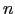

Next: Memory Usage Up: Description of the MIPS Previous: Floating Point Instructions
rfeRestore From Exception
Restore the Status register.
syscallSystem Call
Register $v0 contains the number of the system call (see
Table ) provided by SPIM.
break nBreak
Cause exception . Exception 1 is reserved for the debugger.
nopNo operation
Do nothing.